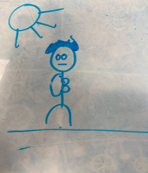
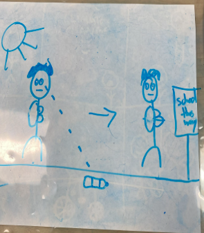
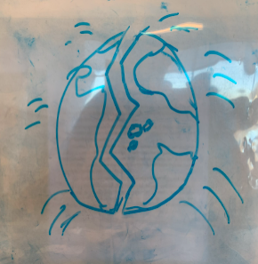
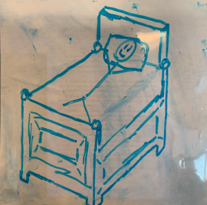
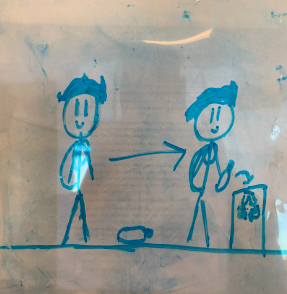
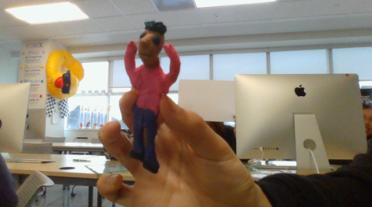
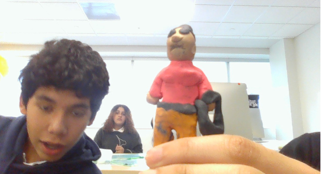
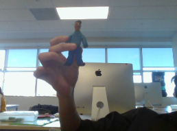
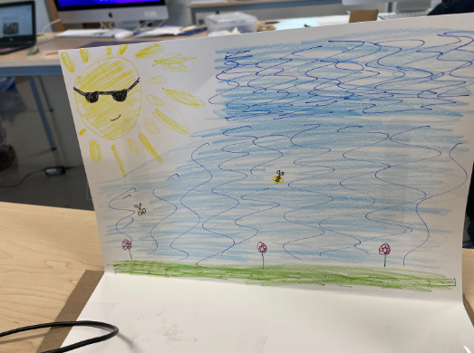
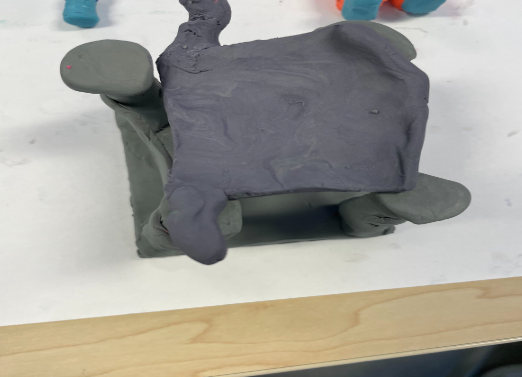

In this loopy model is displays many things directly affect the bigger problem of enviormental issue. I want people to be slightly afraid so they know they they have to make change quickly or else bad things will happen to the world. This loopy should show people why they just stand up and be the change, trying to infleunce poeple.
In this image we see the main character walking to school, nothing else is reavealed at this point
While the main character is walking to school, he notices a water bottle

4 images flash on the sceeen, showing, forest fires, rising sea levles, droughts and infestation of bug
Another screen flashes this one is of the world splitting apart
The next scene is the main chracter waking up
Again the main charcter is walking to school and sees the water bottle, this time he decides to pick it up and recylce it
Our character walks to school. He sees a water bottle on his way and decides not to pick it up. The world has been overrun by problems, such as rising sea levels, forest fires, insect outbreaks, and more. Cut to the world, it now has a huge crack in it and splits in half. Our character wakes up realizing it was a dream. On his way to school, sees a water bottle, and picks it up.
Picture of main character
Picture of 2nd character
Main character revised
Picture of first and last scence set
Picture of bed that main character wakes up on
The final day we worked on getting the drawings done so that we could insert them into the final animation, then submit it.
We used Dragon Frame by using this program to store all the photos needed for the animation, then putting it altogether. We didn't include lighting because we decided it would look better without it
We worked with the characters and the sets so that we could emphasize the fact that pollution isn’t sustainable for the environment. This animation is intended to inform audiences and maybe scare them about the negative impacts of pollution and pollutant's repercussions.